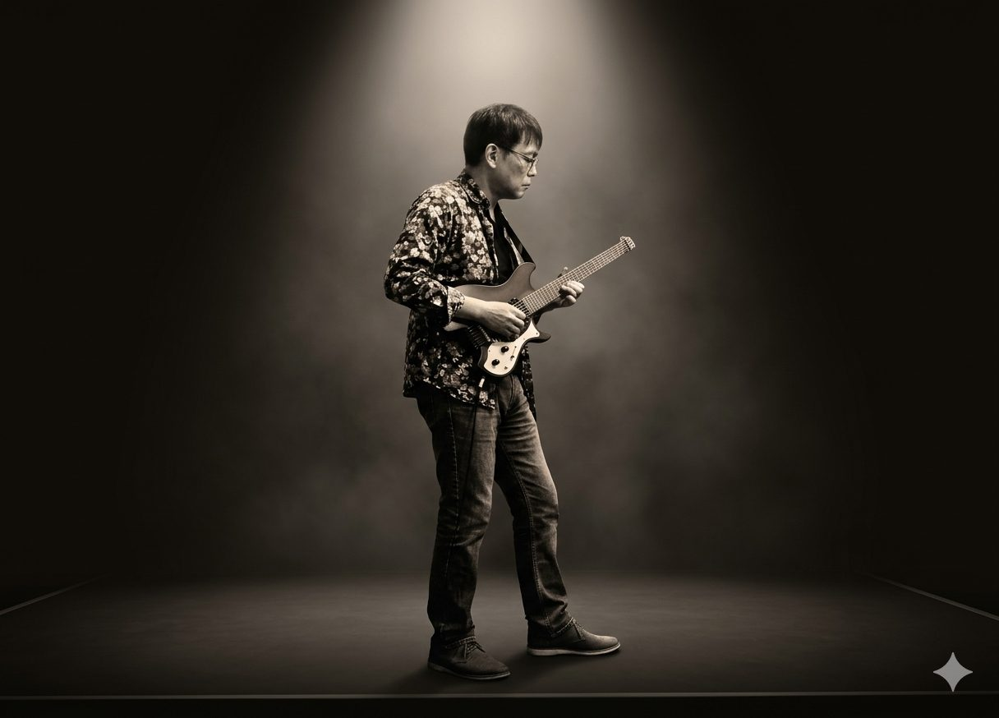

Profile
Tokyo-based electroacoustic composer and guitarist

Bio
Tokyo-based electroacoustic composer and guitarist. For over three decades his practice has crossed improvisation, musique concrète, spatialized composition, and sound installation — always treating the guitar as both an acoustic instrument and an electronic source.
Activity
Two strands of practice: artistic work as a musician, and composition lessons as an educator.
Electroacoustic works for guitar and computer, presented at festivals including the New York Philharmonic Biennial, ARS Electronica, and ICMC Perth.
See the work →Gear
Guitar and computer (Max/MSP/Jitter), used extensively for multichannel spatialized pieces. Thresholds of Presence is a project-specific departure, built in real time from guitar and Sherman Filterbank 2 (analog filter bank) alone.
Contact
For lessons or project inquiries, get in touch.
Contact form →